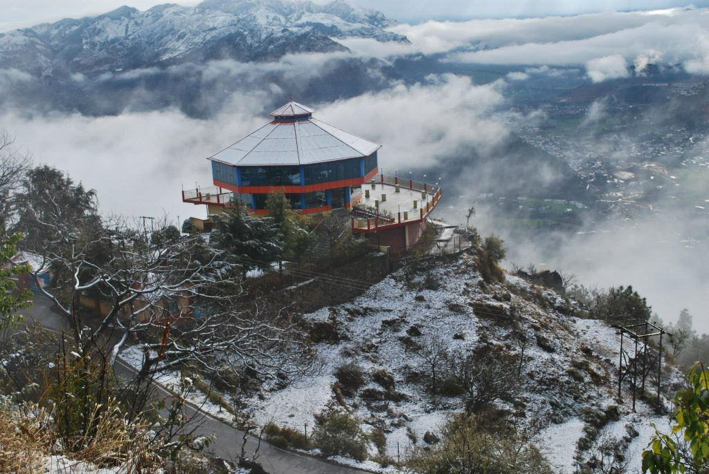

Pithoragarh actually surprised me when I finally opened my eyes and gave it the time it deserved. All it took was an impromptu, unlikely hike through an unmarked trail that finally ushered in the spring for me. All other trips post this moment delivered better returns. There was something sinful, erotic, and pagan about those slopes that made Stravinsky ring in my ears. These photographs fail to do justice to the agroerotica I witnessed but I must try.
I started my exploration by visiting the 18th century Gorkha Fort. As this area is not very far from Nepal border, the Gorkha influence is obvious here. This fort is located on a hilltop overlooking the town. Sadly, some renovation was going on inside the fort and I was not allowed to enter the inner parts. I did explore the outer walls and noticed some memorial plaques, mostly remembering fallen heroes of the world wars. The Kumaon region has a reputation for supplying a lot of soldiers to the armed forces. The Kumaon Regiment has been an important part of the Indian Army since the days of the Raj (The first-ever Param Vir Chakra winner was also formed Kumaon Regiment). On one side of the walls, there is a playground attached to the fort, complete with a gallery, most probably used for Ramleela. When I visited it, some cultural programs pertaining to Holi was going on out there. There are many ancient temples and shrines too in and around the town although I could not find the time to explore them properly.
After a brief visit to the fort and some local sweets at the market, I finally started along the route I had in mind. A short 100 metres helped me escape the confines of the market and stare at the open valley while standing at an advantageous elevation. While the hint of distant peaks had its charm, what particularly attracted me was the sheer spring pastures within the town. The main market is located at a higher altitude but the slopes of the hills are still used for cultivation. Although various constructions are scattered around them, the bulk of this land is still used for agriculture and this is what makes the landscape worthwhile.